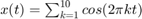
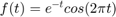
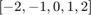
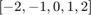
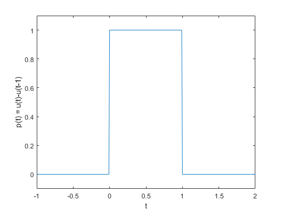

Práctica 3: Señales en tiempo continuo
Contents
Integrantes
Portillo Martínez Arturo
Objetivos
- Manipulación básica de MATLAB.
- Gráficas de señales reales y complejas continuas.
- Transformación de señales continuas (escalamientos y traslaciones).
- Clculo de energía y potencia de señales continuas.
Introducción
Se realizó la investigación del uso de Python para la realización de gráficas, a continuación se muestran las gráficas correspondientes al problema 4 mediante Python.

Se puede consultar el código realizado con Python en el siguiente enlace.
Desarrollo
A continuación se realizará el desarrollo de los siguientes problemas planteados para entregar en la práctica.
1. Reproducir la sección 1.11 del libro de Lathi (versión de clase).
2. Resolver el problema 1.2-2 usando las herramientas del problema anterior. 3. Resolver el problema 1.11-1, los ejes deben mostrarse en el origen además de la edición de tu preferencia.
4. Construye la gráfica de:  para cuatro rangos (figura 2x2). Los ejes deben mostrarse en el origen ademas de la edición de su preferencia.
5. Resolver el problema 1.11-3, agregar como inciso (e) la gráfica de  para
para ![$t\in[-10,10]$](PR03_eq16434444273656135249.png) .
.
6. Construir una app que permita:
- Gráficar señales en tiempo continuo reales, el usuario ingresa la definición de la señal en el formato especifico.
- El usuario puede definir el intervalo de la gráfica.
- El usuario puede seleccionar el tipo de transformación (horizontal, vertical o combinación) que desee realizar a la señal, la app deberá mostrar la gráfica de esta transformación.
- Se adjunta una imagen de la app a la práctica, y el archivo de la app.
No es necesario incluir conclusiones en esta práctica, si lo considera necesario puede incluir apéndices, no olvide incluir sus referencias.
Problema 1
Reproducir la sección 1.11 del libro de Lathi (versión de clase). La versión utilizada en clase es la tercera edición.
1.11 MATLAB: Trabajando con funciones
Trabajar con funciones es fundamental para las aplicaciones de señales y sistemas. MATLAB proporciona varios métodos para definir y evaluar funciones. La comprensión y el uso competente de estos métodos son, por tanto, necesarios y beneficiosos.
1.11-1 Funciones anónimas
Muchas funciones simples se representan convenientemente mediante el uso anónimo de MATLAB. Una función anónima proporciona una representación simbólica de una función definida en términos de operadores, funciones u otras funciones anónimas de MATLAB. Por ejemplo, considere definir la sinusoide amortiguada exponencialmente .
f = @(t) exp(-t).*cos(2*pi*t);
En este contexto, el símbolo @ identifica la expresión como una función anónima, que se asigna un nombre de f. Los paréntesis que siguen al símbolo @ se utilizan para identificar la función independiente. variables (argumentos de entrada), que en este caso es la única variable de tiempo t. Argumentos de entrada, como como t, son locales de la función anónima y no están relacionados con ninguna variable del espacio de trabajo con la mismos nombres.
Una vez definida, f (t) se puede evaluar simplemente pasando los valores de entrada de interés. Por ejemplo:
t = 0; f(t)
ans =
1
evalúa f(t) en t = 0, confirmando el resultado esperado de la unidad. El mismo resultado se obtiene pasando t = 0 directamente.
f(0)
ans =
1
Las entradas vectoriales permiten la evaluación de múltiples valores simultáneamente. Considere la tarea de trazar f(t) en el intervalo  . El comportamiento de la función bruta es claro: f(t) debería oscilar cuatro veces con una envolvente en decayente. Dado que los bocetos precisos a mano son engorrosos, los gráficos generados por MATLAB son una alternativa atractiva. Como ilustra el siguiente ejemplo, se deben tomar medidas para garantizar resultados confiables. Supongamos que se elige el vector t para incluir solo los números enteros contenidos en , es decir, .
. El comportamiento de la función bruta es claro: f(t) debería oscilar cuatro veces con una envolvente en decayente. Dado que los bocetos precisos a mano son engorrosos, los gráficos generados por MATLAB son una alternativa atractiva. Como ilustra el siguiente ejemplo, se deben tomar medidas para garantizar resultados confiables. Supongamos que se elige el vector t para incluir solo los números enteros contenidos en , es decir, .
t = (-2:2);
Esta entrada vectorial se evalúa para formar una salida vectorial.
f(t)
ans =
7.3891 2.7183 1.0000 0.3679 0.1353
El comando de trazado grafica el resultado, que se muestra:
plot(t,f(t)); xlabel('t'); ylabel('f(t)'); grid;

Las líneas de cuadrícula, agregadas mediante el comando de cuadrícula, ayudan a identificar las características. Desafortunadamente, el gráfico no ilustra el comportamiento oscilatorio esperado. Se requieren más puntos para adecuadamente representar f(t).
La pregunta entonces es ¿cuántos puntos son suficientes? Si se eligen muy pocos puntos, la información está perdida. Si se eligen demasiados puntos, se desperdicia memoria y tiempo. Se necesita un equilibrio. Para funciones oscilatorias, normalmente es adecuado trazar de 20 a 200 puntos por oscilación. Para el presente en este caso, se elige t para dar 100 puntos por oscilación.
t = (-2:0.01:2);
La función es de nuevo evaluada y graficada:
plot(t,f(t)); xlabel('t'); ylabel('f(t)'); grid;

1.11-2 Operadores relacionales y la función de paso unitario
La función escalón unitario u(t) surge naturalmente en muchas situaciones prácticas. Por ejemplo, un escalón unitario puede modelar el acto de encender un sistema. Con la ayuda de operadores relacionales, funciones anónimas puede representar la función de escalón unitario.
En MATLAB, un operador relacional compara dos elementos. Si la comparación es cierta, una verdad lógica (1) se devuelve. Si la comparación es falsa, se devuelve un falso lógico (0). A veces llamado indicador de funciones, los operadores relacionales indican si una condición es verdadera. Seis operadores relacionales disponibles: <, >, <=, >=, ==, y ~=.
La función de escalón unitario se define fácilmente utilizando el operador relacional >=.
u = @(t) 1.0.*(t>=0);
Cualquier función con una discontinuidad de salto, como el escalón unitario, es difícil de trazar. Considere la posibilidad de trazar u(t) usando t = (-2:2).
t = (-2:2); plot(t,u(t)); xlabel('t'); ylabel('u(t)');

Dos problemas importantes son evidentes en el gráfico resultante, que se muestra. Primero, MATLAB escala automáticamente los ejes del gráfico para vincular estrechamente los datos. Normalmente, en este caso, la característica deseable oscurece la mayor parte de la trama. En segundo lugar, MATLAB conecta los datos del trazado con líneas, haciendo que una verdadera discontinuidad de salto sea difícil de lograr. La resolución gruesa del vector t enfatiza el efecto al mostrar una línea inclinada errónea entre t=−1 y t = 0. El primer problema se corrige ampliando verticalmente el cuadro delimitador con el eje dominio. El segundo problema se reduce, pero no se elimina, sumando puntos al vector t.
t = (-2:0.01:2); plot(t,u(t)); xlabel('t'); ylabel('u(t)'); axis([-2 2 -0.1 1.1]);

El argumento vectorial de cuatro elementos del eje especifica el eje x mínimo, el eje x máximo, el eje y mínimo y el máximo del eje y, respectivamente. Como se puede obserbar en la gráfica anterior.
Los operadores relacionales se pueden combinar usando AND lógico, O lógico y negación lógica: &, | y ~, respectivamente. Por ejemplo, (t>0)&(t<1) y ~((t<=0)|(t>=1)) prueban si 0<t <1. Para demostrarlo, considere definir y trazar el pulso unitario p(t) = u(t)−u(t −1), como se muestra:
p = @(t) 1.0.*((t>=0)&(t<1)); t = (-1:0.01:2); plot(t,p(t)); xlabel('t'); ylabel('p(t) = u(t)-u(t-1)'); axis([-1 2 -.1 1.1]);
Para operandos escalares, MATLAB también admite dos construcciones lógicas de cortocircuito. El AND lógico de cortocircuito se realiza mediante &&, y el OR lógico de cortocircuito se realiza usando. Los operadores lógicos de cortocircuito suelen ser más eficientes que los operadores lógicos tradicionales porque prueban la segunda parte de la expresión sólo cuando es necesario. Es decir, cuandouna expresión escalar A se encuentra falsa en (A&&B), la expresión escalar B no se evalúa, ya que un resultado falso ya está garantizado. De manera similar, la expresión escalar B no se evalúa cuando la expresión escalar A es encontrado verdadero en (A||B), ya que ya se garantiza un resultado verdadero.